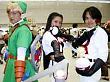

 ますます盛り上がるＮＩＮＴＥＮＤＯスペースワールド2000。熱気ムンムンの会場内をレポートしてみます。
まずは、「ポケモンクリスタルステージ」の周辺で。みなさん、熱心にクリスタルの情報に見入っていますね。そこで見つけた異質（？）な一団。あれはホンモノのロケット団？
いえいえ、ロケット団＆リンクにふんしたコスプレイヤーたちでした。イベントで知り合ったという仲良し３人組はカニおみそさん、あすかさん、ワークスカーニバルさん。小物も手作りという気合の入りようです。「ゲームボーイアドバンスがお目当て」という彼ら。行列にメゲてまだ体験プレーはしていないそうですが、画面を見て「スーパーファミコン並みですね」と喜こんでいました。もちろんポケモンの大ファンだから、『ポケットモンスタークリスタル（仮称）』にも大注目。早くも「買います！」とアツく宣言していましたよ。アドバンスのほうも、ぜひお帰りまでに体験してくださいね。 |
| お次は「一番くじ」のコーナーで特等をひきあてた６歳の田所和之くん。お母さんと一緒に午後から会場にやってきました。セレビィプレゼントにはハガキが間に合わなかったということだけど、くじでは大きなピカチュー＆ピチューのぬいぐるみをもらえました！「セレビィはもらえなかったけどコレがもらえてよかったです」というお母さん。和之くんはお誕生日にゲームボーイを買ってもらってからずっとポケモンに夢中。オーダイルをレベル100まで育てたんですって。スゴい!! |
|
|
最後に、迷子のコーナーで働いているスタッフ、清水美紀さんにお話を聞きました。会場はスゴい人だけれど、やっぱり迷子は多いのかな？ 「今年は少ないですね。携帯電話を持っているかたが増えましたし、待ち合わせコーナーも知名度があがったんじゃないでしょうか。むしろ大人のかた同士がはぐれてしまうことが多いみたいですよ。子どもたちはお母さんを待ちながらじっと体験プレーの列に並んでいて、案外しっかりしていますよ」それでも、はぐれてしまう子どもがいると、清水さんたちスタッフも会場を探します。「お父さん、お母さんたちが人をかきわけて子どもさんを探すのは気がひけますよね。そんなとき、スタッフがみなさんにお断りして人ごみの中に入っていき、子どもさんをお探しするんですよ」お手伝いのスタッフも元気にがんばっています！
夕方になっても熱気さめやらぬ会場内。ＮＩＮＴＥＮＤＯスペースワールドはまだまだ盛り上がります！ |